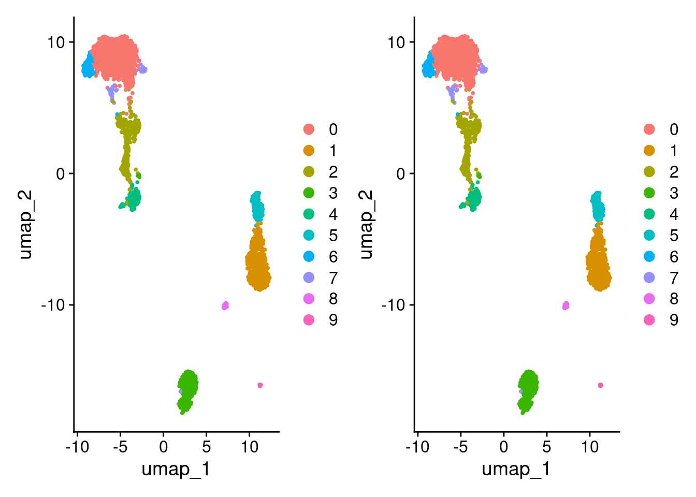
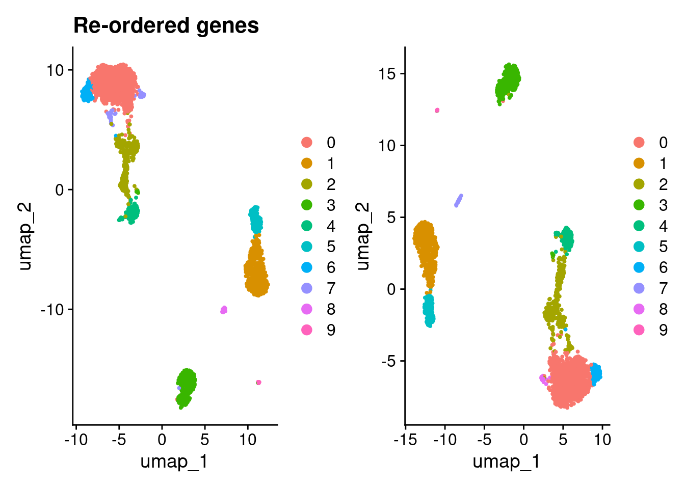

Last updated: 2025-04-01
Checks: 7 0
Knit directory: muse/
This reproducible R Markdown analysis was created with workflowr (version 1.7.1). The Checks tab describes the reproducibility checks that were applied when the results were created. The Past versions tab lists the development history.
Great! Since the R Markdown file has been committed to the Git repository, you know the exact version of the code that produced these results.
Great job! The global environment was empty. Objects defined in the global environment can affect the analysis in your R Markdown file in unknown ways. For reproduciblity it’s best to always run the code in an empty environment.
The command set.seed(20200712) was run prior to running
the code in the R Markdown file. Setting a seed ensures that any results
that rely on randomness, e.g. subsampling or permutations, are
reproducible.
Great job! Recording the operating system, R version, and package versions is critical for reproducibility.
Nice! There were no cached chunks for this analysis, so you can be confident that you successfully produced the results during this run.
Great job! Using relative paths to the files within your workflowr project makes it easier to run your code on other machines.
Great! You are using Git for version control. Tracking code development and connecting the code version to the results is critical for reproducibility.
The results in this page were generated with repository version 8c145e4. See the Past versions tab to see a history of the changes made to the R Markdown and HTML files.
Note that you need to be careful to ensure that all relevant files for
the analysis have been committed to Git prior to generating the results
(you can use wflow_publish or
wflow_git_commit). workflowr only checks the R Markdown
file, but you know if there are other scripts or data files that it
depends on. Below is the status of the Git repository when the results
were generated:
Ignored files:
Ignored: .Rproj.user/
Ignored: data/1M_neurons_filtered_gene_bc_matrices_h5.h5
Ignored: data/293t/
Ignored: data/293t_3t3_filtered_gene_bc_matrices.tar.gz
Ignored: data/293t_filtered_gene_bc_matrices.tar.gz
Ignored: data/5k_Human_Donor1_PBMC_3p_gem-x_5k_Human_Donor1_PBMC_3p_gem-x_count_sample_filtered_feature_bc_matrix.h5
Ignored: data/5k_Human_Donor2_PBMC_3p_gem-x_5k_Human_Donor2_PBMC_3p_gem-x_count_sample_filtered_feature_bc_matrix.h5
Ignored: data/5k_Human_Donor3_PBMC_3p_gem-x_5k_Human_Donor3_PBMC_3p_gem-x_count_sample_filtered_feature_bc_matrix.h5
Ignored: data/5k_Human_Donor4_PBMC_3p_gem-x_5k_Human_Donor4_PBMC_3p_gem-x_count_sample_filtered_feature_bc_matrix.h5
Ignored: data/97516b79-8d08-46a6-b329-5d0a25b0be98.h5ad
Ignored: data/Parent_SC3v3_Human_Glioblastoma_filtered_feature_bc_matrix.tar.gz
Ignored: data/brain_counts/
Ignored: data/cl.obo
Ignored: data/cl.owl
Ignored: data/jurkat/
Ignored: data/jurkat:293t_50:50_filtered_gene_bc_matrices.tar.gz
Ignored: data/jurkat_293t/
Ignored: data/jurkat_filtered_gene_bc_matrices.tar.gz
Ignored: data/pbmc20k/
Ignored: data/pbmc20k_seurat/
Ignored: data/pbmc3k/
Ignored: data/pbmc3k_seurat.rds
Ignored: data/pbmc4k_filtered_gene_bc_matrices.tar.gz
Ignored: data/pbmc_1k_v3_filtered_feature_bc_matrix.h5
Ignored: data/pbmc_1k_v3_raw_feature_bc_matrix.h5
Ignored: data/refdata-gex-GRCh38-2020-A.tar.gz
Ignored: data/seurat_1m_neuron.rds
Ignored: data/t_3k_filtered_gene_bc_matrices.tar.gz
Ignored: r_packages_4.4.1/
Untracked files:
Untracked: analysis/bioc_scrnaseq.Rmd
Note that any generated files, e.g. HTML, png, CSS, etc., are not included in this status report because it is ok for generated content to have uncommitted changes.
These are the previous versions of the repository in which changes were
made to the R Markdown (analysis/seurat_rerun.Rmd) and HTML
(docs/seurat_rerun.html) files. If you’ve configured a
remote Git repository (see ?wflow_git_remote), click on the
hyperlinks in the table below to view the files as they were in that
past version.
| File | Version | Author | Date | Message |
|---|---|---|---|---|
| Rmd | 8c145e4 | Dave Tang | 2025-04-01 | Using Seurat version 4 |
| html | 4f8b0d2 | Dave Tang | 2025-04-01 | Build site. |
| Rmd | 90696a0 | Dave Tang | 2025-04-01 | Re-running Seurat |
If I re-run Seurat in the same manner with the same dataset, will I get identical results?
Import raw pbmc3k dataset from my server.
seurat_obj <- readRDS(url("https://davetang.org/file/pbmc3k_seurat.rds", "rb"))
seurat_objAn object of class Seurat
32738 features across 2700 samples within 1 assay
Active assay: RNA (32738 features, 0 variable features)
1 layer present: countsFilter.
pbmc3k <- CreateSeuratObject(
counts = seurat_obj@assays$RNA$counts,
min.cells = 3,
min.features = 200,
project = "pbmc3k"
)
pbmc3kAn object of class Seurat
13714 features across 2700 samples within 1 assay
Active assay: RNA (13714 features, 0 variable features)
1 layer present: countsSeurat version workflows as functions.
seurat_wf_v4 <- function(seurat_obj, scale_factor = 1e4, num_features = 2000, num_pcs = 30, cluster_res = 0.5, debug_flag = FALSE){
seurat_obj <- NormalizeData(seurat_obj, normalization.method = "LogNormalize", scale.factor = scale_factor, verbose = debug_flag)
seurat_obj <- FindVariableFeatures(seurat_obj, selection.method = 'vst', nfeatures = num_features, verbose = debug_flag)
seurat_obj <- ScaleData(seurat_obj, verbose = debug_flag)
seurat_obj <- RunPCA(seurat_obj, verbose = debug_flag)
seurat_obj <- RunUMAP(seurat_obj, dims = 1:num_pcs, verbose = debug_flag)
seurat_obj <- FindNeighbors(seurat_obj, dims = 1:num_pcs, verbose = debug_flag)
seurat_obj <- FindClusters(seurat_obj, resolution = cluster_res, verbose = debug_flag)
seurat_obj
}
seurat_wf_v5 <- function(seurat_obj, scale_factor = 1e4, num_features = 2000, num_pcs = 30, cluster_res = 0.5, debug_flag = FALSE){
seurat_obj <- SCTransform(seurat_obj, verbose = debug_flag)
seurat_obj <- RunPCA(seurat_obj, verbose = debug_flag)
seurat_obj <- RunUMAP(seurat_obj, dims = 1:num_pcs, verbose = debug_flag)
seurat_obj <- FindNeighbors(seurat_obj, dims = 1:num_pcs, verbose = debug_flag)
seurat_obj <- FindClusters(seurat_obj, resolution = cluster_res, verbose = debug_flag)
seurat_obj
}Process pbmc3k using the Seurat version 5 workflow.
pbmc3k_1 <- seurat_wf_v5(pbmc3k)Warning: The default method for RunUMAP has changed from calling Python UMAP via reticulate to the R-native UWOT using the cosine metric
To use Python UMAP via reticulate, set umap.method to 'umap-learn' and metric to 'correlation'
This message will be shown once per sessionpbmc3k_1An object of class Seurat
26286 features across 2700 samples within 2 assays
Active assay: SCT (12572 features, 3000 variable features)
3 layers present: counts, data, scale.data
1 other assay present: RNA
2 dimensional reductions calculated: pca, umapProcess pbmc3k using the Seurat version 5 workflow again.
pbmc3k_2 <- seurat_wf_v5(pbmc3k)
pbmc3k_2An object of class Seurat
26286 features across 2700 samples within 2 assays
Active assay: SCT (12572 features, 3000 variable features)
3 layers present: counts, data, scale.data
1 other assay present: RNA
2 dimensional reductions calculated: pca, umapCompare UMAPs.
DimPlot(pbmc3k_1) + DimPlot(pbmc3k_1)
| Version | Author | Date |
|---|---|---|
| 4f8b0d2 | Dave Tang | 2025-04-01 |
Looks the same but let’s double check.
identical(
pbmc3k_1@reductions$umap@cell.embeddings,
pbmc3k_2@reductions$umap@cell.embeddings
)[1] TRUECompare clustering.
identical(
row.names(pbmc3k_1@meta.data),
row.names(pbmc3k_2@meta.data)
)[1] TRUEidentical(
pbmc3k_1@meta.data$seurat_clusters,
pbmc3k_2@meta.data$seurat_clusters
)[1] TRUEUse the same dataset but re-order the count matrix randomly.
my_mat <- seurat_obj@assays$RNA$counts
set.seed(1984)
col_order <- sample(colnames(my_mat))
row_order <- sample(rownames(my_mat))
my_mat <- my_mat[row_order, col_order]
pbmc3k_reordered <- CreateSeuratObject(
counts = my_mat,
min.cells = 3,
min.features = 200,
project = "pbmc3k"
)
stopifnot(all(colnames(pbmc3k_reordered@assays$RNA$counts) %in% colnames(pbmc3k@assays$RNA$counts)))
stopifnot(all(rownames(pbmc3k_reordered@assays$RNA$counts) %in% rownames(pbmc3k@assays$RNA$counts)))
pbmc3k_reorderedAn object of class Seurat
13714 features across 2700 samples within 1 assay
Active assay: RNA (13714 features, 0 variable features)
1 layer present: countsProcess the re-ordered pbmc3k dataset using the Seurat version 5 workflow again.
pbmc3k_3 <- seurat_wf_v5(pbmc3k_reordered)
pbmc3k_3An object of class Seurat
26286 features across 2700 samples within 2 assays
Active assay: SCT (12572 features, 3000 variable features)
3 layers present: counts, data, scale.data
1 other assay present: RNA
2 dimensional reductions calculated: pca, umapCompare UMAPs.
DimPlot(pbmc3k_1) + DimPlot(pbmc3k_3)
| Version | Author | Date |
|---|---|---|
| 4f8b0d2 | Dave Tang | 2025-04-01 |
Compare clustering.
idx <- match(row.names(pbmc3k_1@meta.data), row.names(pbmc3k_3@meta.data))
stopifnot(row.names(pbmc3k_1@meta.data) == row.names(pbmc3k_3@meta.data)[idx])
table(
pbmc3k_1@meta.data$seurat_clusters,
pbmc3k_3@meta.data$seurat_clusters[idx]
)
0 1 2 3 4 5 6 7 8 9
0 968 0 1 0 0 0 6 0 0 0
1 0 497 0 0 0 0 0 0 0 0
2 1 0 365 0 0 0 0 0 0 0
3 0 0 4 355 0 0 0 0 0 0
4 0 0 1 0 156 0 0 0 0 0
5 0 0 0 0 0 154 0 0 0 0
6 1 0 0 0 0 0 99 0 0 0
7 0 0 2 1 0 0 0 43 0 0
8 0 0 0 0 0 0 0 0 34 0
9 0 0 0 0 0 0 0 0 0 12What if we used version 4?
pbmc3k_a <- seurat_wf_v4(pbmc3k)
pbmc3k_b <- seurat_wf_v4(pbmc3k_reordered)
idx <- match(row.names(pbmc3k_a@meta.data), row.names(pbmc3k_b@meta.data))
stopifnot(row.names(pbmc3k_a@meta.data) == row.names(pbmc3k_b@meta.data)[idx])
table(
pbmc3k_a@meta.data$seurat_clusters,
pbmc3k_b@meta.data$seurat_clusters[idx]
)
0 1 2 3 4 5 6 7
0 1182 0 0 5 0 0 0 0
1 0 489 0 0 2 0 0 0
2 0 0 351 0 0 0 0 0
3 6 0 0 295 0 0 0 0
4 0 0 0 1 0 162 0 0
5 0 0 0 0 161 0 0 0
6 0 0 0 0 0 0 32 0
7 0 1 0 0 0 0 0 13
sessionInfo()R version 4.4.1 (2024-06-14)
Platform: x86_64-pc-linux-gnu
Running under: Ubuntu 22.04.5 LTS
Matrix products: default
BLAS: /usr/lib/x86_64-linux-gnu/openblas-pthread/libblas.so.3
LAPACK: /usr/lib/x86_64-linux-gnu/openblas-pthread/libopenblasp-r0.3.20.so; LAPACK version 3.10.0
locale:
[1] LC_CTYPE=en_US.UTF-8 LC_NUMERIC=C
[3] LC_TIME=en_US.UTF-8 LC_COLLATE=en_US.UTF-8
[5] LC_MONETARY=en_US.UTF-8 LC_MESSAGES=en_US.UTF-8
[7] LC_PAPER=en_US.UTF-8 LC_NAME=C
[9] LC_ADDRESS=C LC_TELEPHONE=C
[11] LC_MEASUREMENT=en_US.UTF-8 LC_IDENTIFICATION=C
time zone: Etc/UTC
tzcode source: system (glibc)
attached base packages:
[1] stats graphics grDevices utils datasets methods base
other attached packages:
[1] Seurat_5.2.1 SeuratObject_5.0.2 sp_2.2-0 lubridate_1.9.3
[5] forcats_1.0.0 stringr_1.5.1 dplyr_1.1.4 purrr_1.0.2
[9] readr_2.1.5 tidyr_1.3.1 tibble_3.2.1 ggplot2_3.5.1
[13] tidyverse_2.0.0 workflowr_1.7.1
loaded via a namespace (and not attached):
[1] RColorBrewer_1.1-3 rstudioapi_0.17.1
[3] jsonlite_1.8.9 magrittr_2.0.3
[5] spatstat.utils_3.1-2 farver_2.1.2
[7] rmarkdown_2.28 zlibbioc_1.52.0
[9] fs_1.6.4 vctrs_0.6.5
[11] ROCR_1.0-11 DelayedMatrixStats_1.28.1
[13] spatstat.explore_3.3-4 S4Arrays_1.6.0
[15] htmltools_0.5.8.1 SparseArray_1.6.2
[17] sass_0.4.9 sctransform_0.4.1
[19] parallelly_1.38.0 KernSmooth_2.23-24
[21] bslib_0.8.0 htmlwidgets_1.6.4
[23] ica_1.0-3 plyr_1.8.9
[25] plotly_4.10.4 zoo_1.8-13
[27] cachem_1.1.0 whisker_0.4.1
[29] igraph_2.1.4 mime_0.12
[31] lifecycle_1.0.4 pkgconfig_2.0.3
[33] Matrix_1.7-0 R6_2.5.1
[35] fastmap_1.2.0 GenomeInfoDbData_1.2.13
[37] MatrixGenerics_1.18.1 fitdistrplus_1.2-2
[39] future_1.34.0 shiny_1.10.0
[41] digest_0.6.37 colorspace_2.1-1
[43] S4Vectors_0.44.0 patchwork_1.3.0
[45] ps_1.8.1 rprojroot_2.0.4
[47] tensor_1.5 RSpectra_0.16-2
[49] irlba_2.3.5.1 GenomicRanges_1.58.0
[51] labeling_0.4.3 progressr_0.15.0
[53] spatstat.sparse_3.1-0 timechange_0.3.0
[55] httr_1.4.7 polyclip_1.10-7
[57] abind_1.4-8 compiler_4.4.1
[59] withr_3.0.2 fastDummies_1.7.5
[61] highr_0.11 MASS_7.3-60.2
[63] DelayedArray_0.32.0 tools_4.4.1
[65] lmtest_0.9-40 httpuv_1.6.15
[67] future.apply_1.11.3 goftest_1.2-3
[69] glmGamPoi_1.18.0 glue_1.8.0
[71] callr_3.7.6 nlme_3.1-164
[73] promises_1.3.2 grid_4.4.1
[75] Rtsne_0.17 getPass_0.2-4
[77] cluster_2.1.6 reshape2_1.4.4
[79] generics_0.1.3 gtable_0.3.6
[81] spatstat.data_3.1-4 tzdb_0.4.0
[83] data.table_1.16.2 hms_1.1.3
[85] XVector_0.46.0 BiocGenerics_0.52.0
[87] spatstat.geom_3.3-5 RcppAnnoy_0.0.22
[89] ggrepel_0.9.6 RANN_2.6.2
[91] pillar_1.10.1 spam_2.11-1
[93] RcppHNSW_0.6.0 later_1.3.2
[95] splines_4.4.1 lattice_0.22-6
[97] survival_3.6-4 deldir_2.0-4
[99] tidyselect_1.2.1 miniUI_0.1.1.1
[101] pbapply_1.7-2 knitr_1.48
[103] git2r_0.35.0 gridExtra_2.3
[105] IRanges_2.40.1 SummarizedExperiment_1.36.0
[107] scattermore_1.2 stats4_4.4.1
[109] xfun_0.48 Biobase_2.66.0
[111] matrixStats_1.5.0 UCSC.utils_1.2.0
[113] stringi_1.8.4 lazyeval_0.2.2
[115] yaml_2.3.10 evaluate_1.0.1
[117] codetools_0.2-20 cli_3.6.3
[119] uwot_0.2.3 xtable_1.8-4
[121] reticulate_1.41.0 munsell_0.5.1
[123] processx_3.8.4 jquerylib_0.1.4
[125] GenomeInfoDb_1.42.3 Rcpp_1.0.13
[127] globals_0.16.3 spatstat.random_3.3-2
[129] png_0.1-8 spatstat.univar_3.1-2
[131] parallel_4.4.1 dotCall64_1.2
[133] sparseMatrixStats_1.18.0 listenv_0.9.1
[135] viridisLite_0.4.2 scales_1.3.0
[137] ggridges_0.5.6 crayon_1.5.3
[139] rlang_1.1.4 cowplot_1.1.3